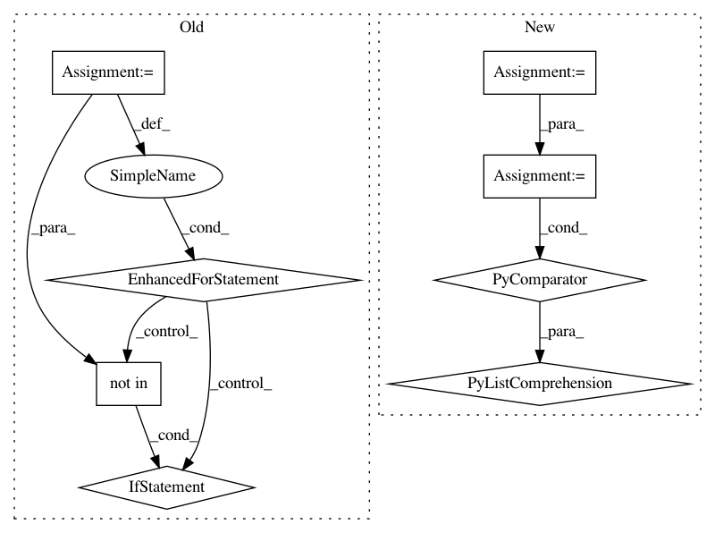

13bbee615c87c812ddcfff73746cd504222e3fb0,onmt/Models.py,,make_base_model,#Any#Any#Any#Any#Any#,561
Before Change
def make_base_model(opt, model_opt, fields, cuda, checkpoint=None):
// HACK: collect source feature vocabs.
feature_vocabs = []
for j in range(100):
key = "src_feat_" + str(j)
if key not in fields:
break
feature_vocabs.append(fields[key].vocab)
emb_opts = {"src_word_vec_size": model_opt.src_word_vec_size,
"position_encoding": model_opt.position_encoding,
"feat_merge": model_opt.feat_merge,
"feat_vec_exponent": model_opt.feat_vec_exponent,
After Change
// Make Encoder.
src_vocab = fields["src"].vocab
num_feat_embeddings = [len(feat_dict) for feat_dict in
ONMTDataset.collect_feature_dicts(fields)]
embeddings = build_embeddings(
model_opt, src_vocab.stoi[onmt.IO.PAD_WORD],
len(src_vocab), for_encoder=True,
num_feat_embeddings=num_feat_embeddings)
In pattern: SUPERPATTERN
Frequency: 3
Non-data size: 8
Instances
Project Name: OpenNMT/OpenNMT-py
Commit Name: 13bbee615c87c812ddcfff73746cd504222e3fb0
Time: 2017-08-30
Author: nasa4836@gmail.com
File Name: onmt/Models.py
Class Name:
Method Name: make_base_model
Project Name: OpenNMT/OpenNMT-py
Commit Name: 32579822389423c7f4120e222aa26652f8507735
Time: 2018-12-18
Author: guillaumekln@users.noreply.github.com
File Name: onmt/utils/optimizers.py
Class Name: Optimizer
Method Name: set_parameters
Project Name: OpenNMT/OpenNMT-py
Commit Name: 77a09f458cb762db906e8f8c9c87df42e280096d
Time: 2017-08-26
Author: srush@seas.harvard.edu
File Name: onmt/Translator.py
Class Name:
Method Name: make_features